Raqib
Mu'izzuddin
|
Bachelor of Information Science (Hons.)
Passionate about building modern information systems, designing intuitive user experiences, and developing practical digital solutions that solve real business problems.
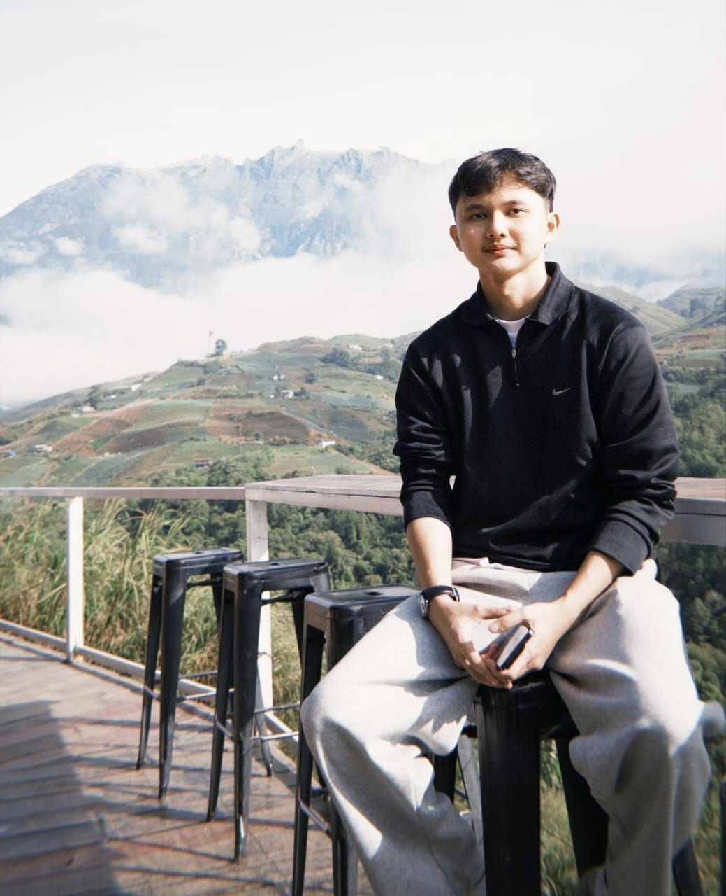
5+
Academic Projects
10+
Technical Skills
4+
Years of Learning
100%
Passion for Tech
Turning Ideas Into Practical Digital Solutions
I'm currently pursuing a Bachelor of Information Systems at Universiti Teknologi MARA (UiTM). My interests include system analysis, web development, UI/UX design, database management, and project management.
Throughout my academic journey, I've worked on various projects ranging from attendance systems and compliance management systems to responsive websites and user interface designs. What draws me to Information Systems is the balance between logic and creativity — I enjoy untangling how a business actually works and then designing something people genuinely find easy to use.
Bachelor of Information Science (Hons.), Information System Management — UiTM Puncak Perdana, 2025–Present
Aspiring to grow into a Business Analyst / Systems Analyst role, bridging business needs with practical, user-centered digital systems.
- Information Systems
- UI/UX Design
- Business Analytics
- Artificial Intelligence
- Power BI
- Malay — Native
- English — Fluent
- Mandarin — Basic
- Melanau — Native
Tools & Technologies
Programming
HTML5
CSS3
JavaScript
PHP
C++
Database
MySQL
Design
Figma
Canva
Illustrator
Analytics
Power BI
Excel
Version Control
GitHub
Productivity & Media
CapCut
MS Project
Premiere Pro
Academic Projects
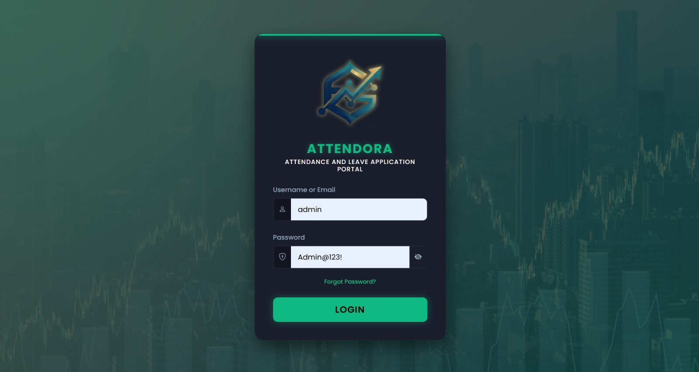
Attendora
Role: Web Developer & DB Designer
Impact: Automated attendance and leave processing, replacing legacy paper logs with real-time tracking.
A comprehensive web-based portal designed to streamline attendance tracking and leave management. This application provides an intuitive interface for efficient timekeeping, automated leave request processing, and centralized record management, replacing manual administrative tasks with a reliable digital solution.
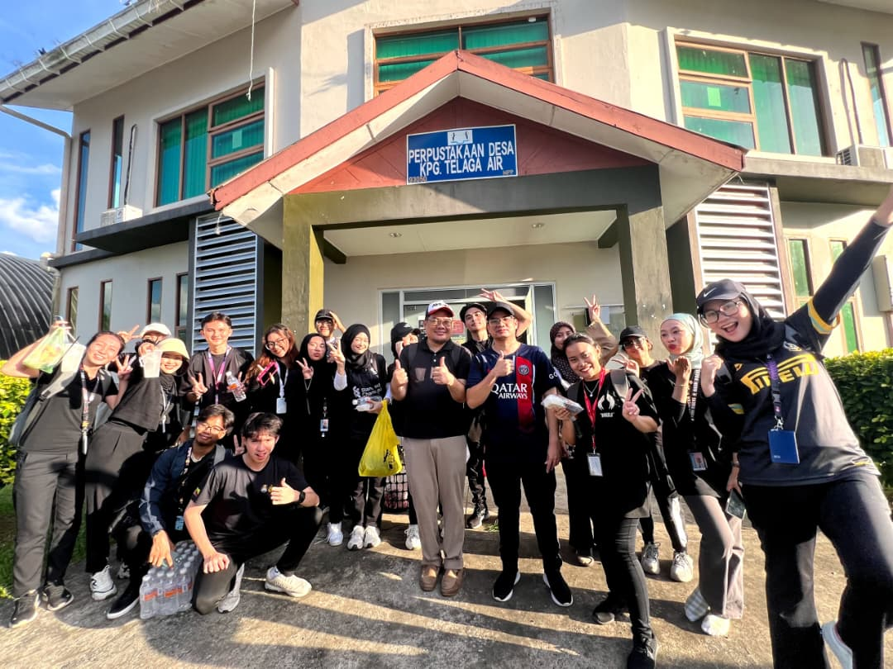
E-LEAD Outreach Program
Role: Assistant Project Leader
Impact: Managed community outreach planning, budget execution, and digital documentation.
Served as the Assistant Project Leader for the E-LEAD Outreach Program, contributing to community engagement, project planning, and program execution.
View Flipbook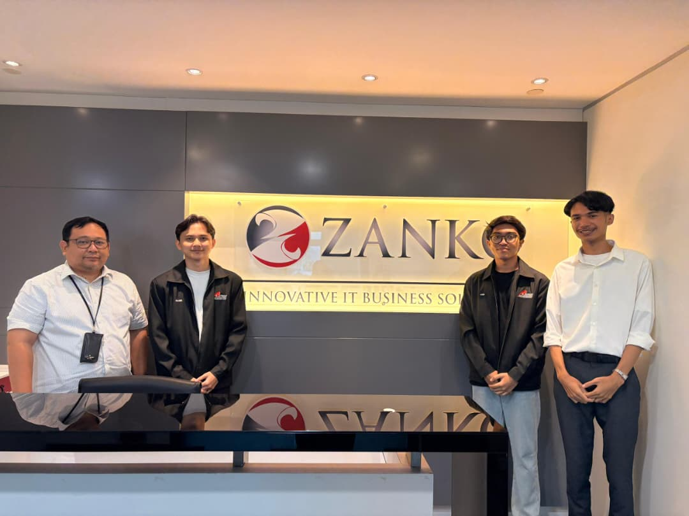
Interview at Zanko Sdn Bhd
Role: Systems Analyst Researcher
Impact: Evaluated corporate IT infrastructures and agile development frameworks in an active enterprise setting.
Engaged with industry professionals to analyze real-world IT business solutions and project management methodologies. This field study provided critical insights into corporate technology operations, bridging the gap between academic information systems theory and practical enterprise applications.
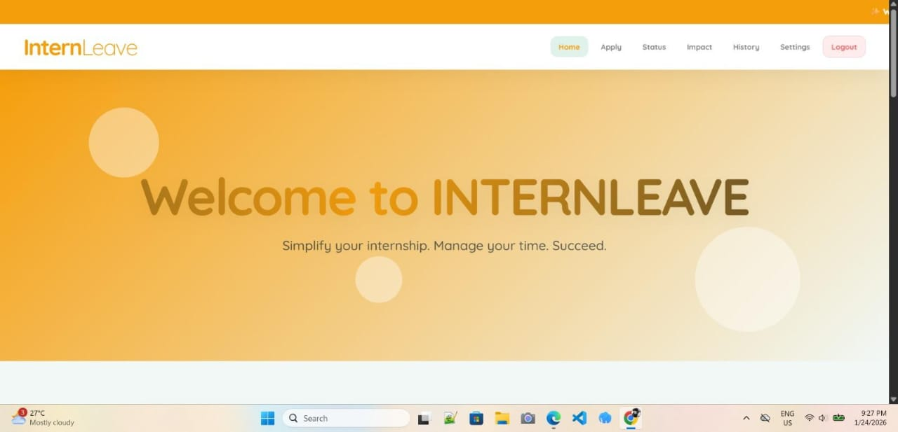
InternLeave
Role: Database Architect
Impact: Modeled relational ERD schemas and SQL constraints to streamline student-faculty leave workflows.
An academic database project developed to digitize and simplify university internship leave workflows. Built with a robust backend architecture utilizing structured SQL tables and detailed Entity-Relationship Models, this system provides a seamless, automated approval process between students and supervising faculty.
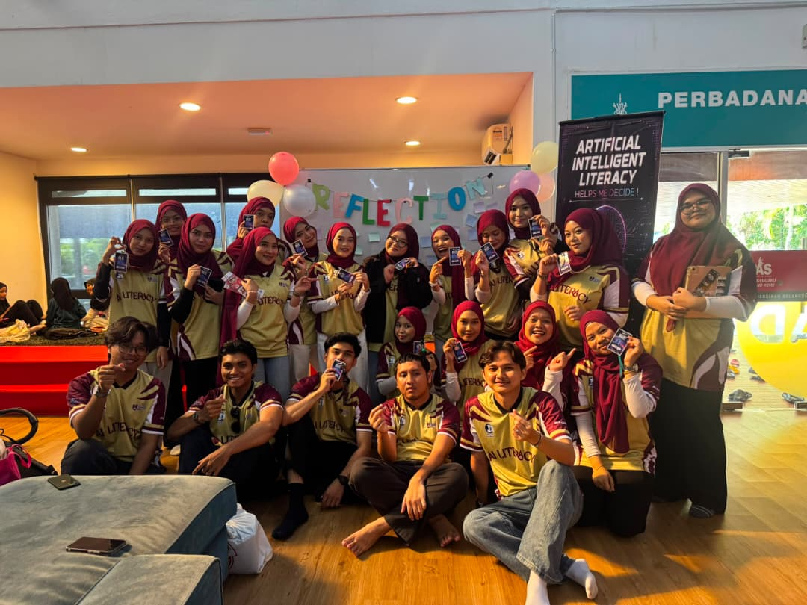
Artificial Intelligence "Ai-Lit" Outreach Program
Role: Logistics Coordinator
Impact: Managed venue operations, event flow, and media outreach for an AI literacy community workshop.
Served as the Logistics Coordinator for the Ai-Lit Outreach Program, supporting event planning, logistics coordination, and program execution.
View Instagram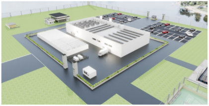
Data Center Infrastructure Project
Role: Infrastructure Modeler
Impact: Modeled a 3D scalable enterprise data center topology focusing on power management and server layouts.
Designed and modeled a scalable data center architecture, focusing on network topology, hardware allocation, and security protocols. This project involved analyzing enterprise IT requirements, power management, and disaster recovery strategies to ensure high availability and robust system performance. (Coohom)
View Video Tour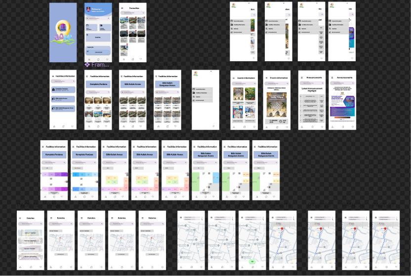
Figma Mobile Application Design
Role: Lead UI/UX Designer
Impact: Crafted an end-to-end interactive mobile navigation prototype adhering to UI accessibilty standards.
Designed a comprehensive mobile UI/UX prototype in Figma for "GOPP", a dedicated campus navigation application for UiTM Permatang Pauh. This project focused on user-centered design principles, featuring intuitive user flows, interactive wireframes, and accessible interfaces to streamline facility discovery and campus routing for students and visitors.
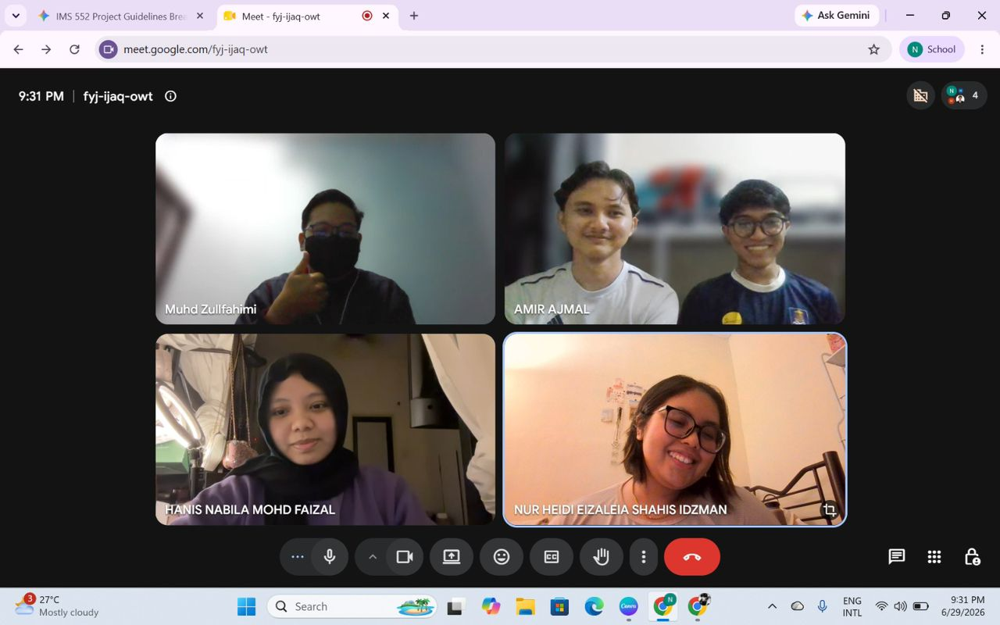
Interview at MasKargo (Unisys)
Role: Field Study Investigator
Impact: Analyzed the high-volume operational workflows of Unisys enterprise cargo systems in aviation logistics.
Conducted an in-depth technical interview with Encik Zulfahimi to analyze the implementation and operational impact of the Unisys enterprise system at MASKargo. This collaborative case study explored system workflows, enterprise architecture, and data management within aviation logistics, bridging academic theories of information systems with real-world, high-volume industry applications.
Leadership & Outreach
E-LEAD Outreach Program
Co-led planning and execution of a community-facing outreach initiative, coordinating volunteers and managing on-the-ground logistics to deliver the program successfully.
Ai-Lit Outreach Program
Managed event logistics for an AI-literacy outreach program, ensuring smooth coordination between organizers, venues, and participants.
Education & Professional Experience
2016 – 2021
Sekolah Menengah Kebangsaan Dalat
Dalat, Mukah, Sarawak
Completed secondary education while actively participating in school activities and developing strong communication, leadership, and problem-solving skills that built the foundation for my academic journey.
2022 – 2024
Diploma in Information Management
Universiti Teknologi MARA (UiTM) Kampus Samarahan
Studied information management, database systems, records management, web development, information retrieval, and digital content management while completing various academic system development projects.
February – March 2024
Management Staff (Internship)
Galeri Warisan Melanau
Completed industrial training by assisting with office administration, documentation management, records handling, customer services, and daily operational activities while gaining practical workplace experience.
October – December 2024
Kitchen Crew
Segara Senja
Prepared daily ingredients and maintained strict food safety, sanitation, and hygiene standards in a fast-paced environment while adhering fully to local health regulations. Ensured high customer satisfaction by executing orders with top-tier accuracy, speed, and presentation during peak service hours, consistently minimizing ticket times without compromising quality.
2025 – Present
Bachelor of Information Science (Honours)
Information System Management
Universiti Teknologi MARA (UiTM) Puncak Perdana
Currently pursuing a bachelor's degree with a focus on information systems analysis, database management, web application development, UI/UX design, project management, and enterprise information systems while developing real-world academic projects.
Education
Bachelor of Information Science (Hons.)
Information System Management — UiTM Puncak Perdana
Diploma in Information Management
UiTM Kampus Samarahan
Technical Stack
Fun Facts
8+
Projects
2
Community Programs
2
Internships
5+
Programming Languages & Tools
Let's Work Together
Feel free to reach out if you would like to discuss internship opportunities, collaborations, or simply connect.
Send EmailPhotography & Adventures
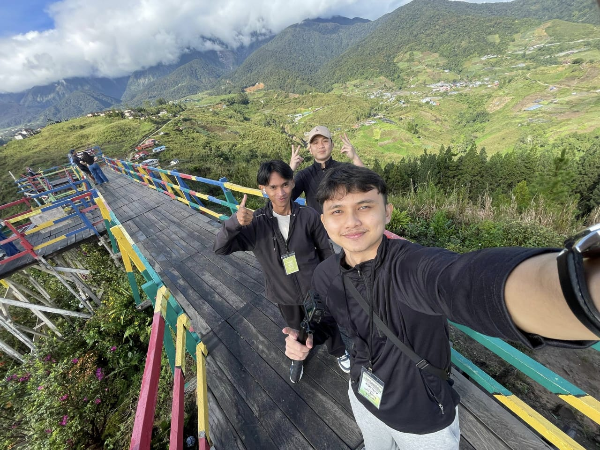
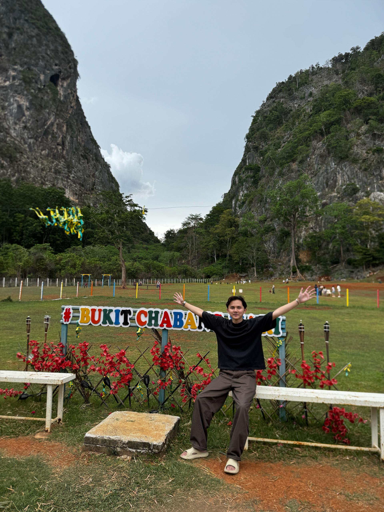
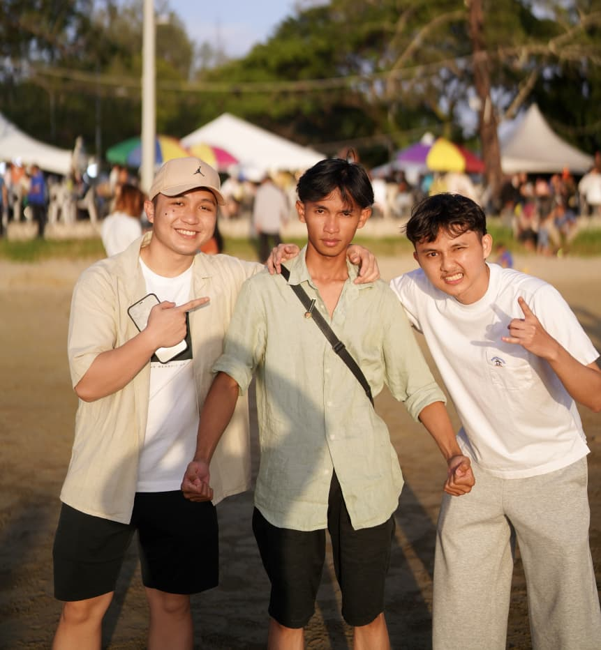
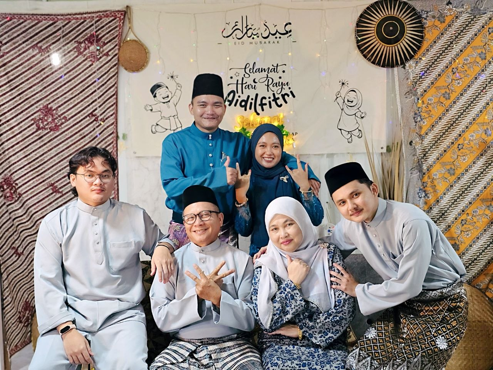